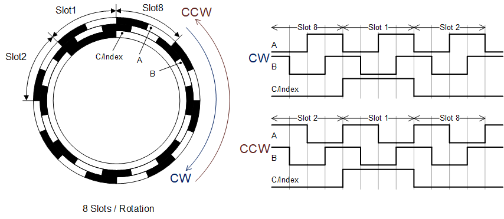
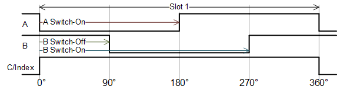
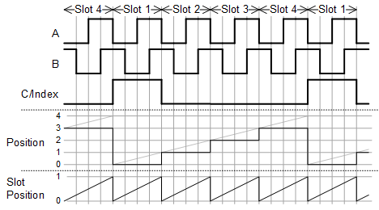
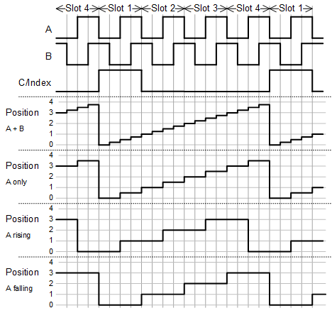
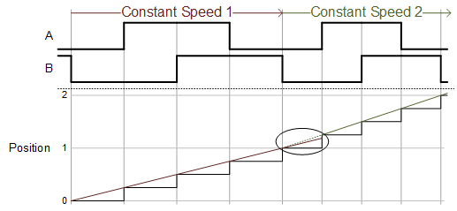
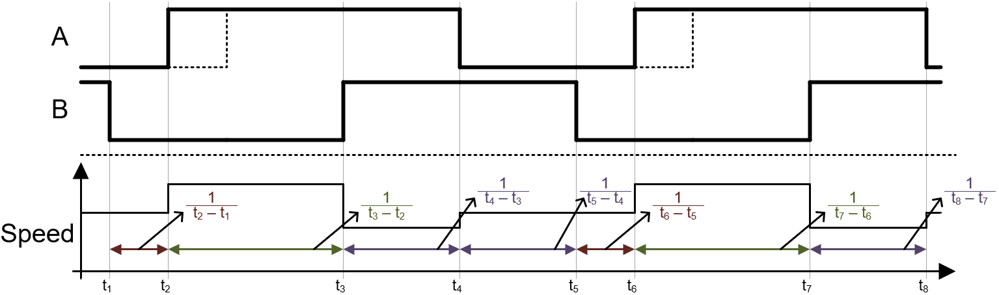
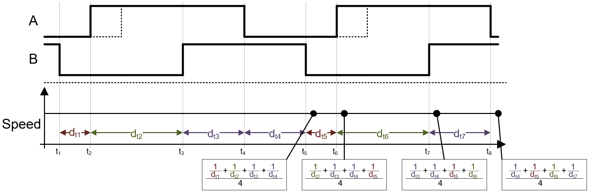
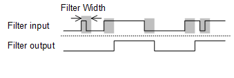

Quadrature Usage Notes — Information about the I/O module
A quadrature encoder uses a wheel with slots (teeth) to indicate the position of the shaft (high and low side, or black and white in the figure below). This wheel is emulated by the QAE (Quadrature Encoding) code module. The following image shows an example with a wheel that contains 8 slots:

When rotating CW (clockwise), the A signal is leading, when rotating CCW (counterclockwise), the B signal is leading.
The following image shows the parameterizing of the quadrature signals:

Note that the parameterizing of the quadrature signals is valid for all slots (the image shows only slot1) and the parameterizing is CW (clockwise) rotation oriented.
The following image shows the details of the outputs of the QAE driver block:

Note that the Position [Number of Slot] output starts from 0 and counts to the number of slots minus 1. The Slot Position output is a fraction between 0 and 1. This information can be used for a precision positioning function (to be added manually).
A quadrature decoder requires three lines: A, B, and C/Index. Lines A and B provide information on position and direction, and C/Index provides information on the incremental encoder sensor signal measuring pulses for completed revolutions. The QAD (Quadrature Decoding) code module can be parameterized for different operating modes.
The following image shows the behavior of the Position [Number of Slot] output for the different modes which are set with the Captured Signal Edges parameter:

The following image shows the extrapolation functionality:

Note the extrapolation is only 100% correct if the speed is constant. If the speed increases, the extrapolated position value is too low (as shown in the above image). If the speed decreases, the extrapolated position value will be too high.
The A- and B- signals are not always perfectly shifted by 90°. Since the speed calculation uses the delta times between two detected signal edges, this can lead to non-stable speed values, even if the speed of the rotating wheel is constant. This issue is depicted in the following figure:

The same issue can be observed if the ratio [capturing frequency / quadrature signals frequency] is below a certain value.
For this issue, the speed filter can improve the speed measurement. The filter calculates the average of the last elapsed delta times. The amount of elapsed delta times can be set with the Speed Filter Width parameter. The following image explains the setting with Speed Filter Width parameter set to 4:

With this setup, the sum of the last 4 elapsed delta times is always the same. The resulting speed value therefore remains stable.
In some situations, the simulation environment may be contaminated owing to cross-talking issues. There are many reasons for this such as weak signal drivers, long cables for connections, different signal sources, etc. This issue often leads to the problem of signal glitches and spikes of the measured signals which can affect the measured results. The QAD code module offers a parameterizeable glitch filter to improve such environments. The following image depicts the functionality:

Note that the glitch filter width should not be set higher than required. For instance if the filter width is higher than the maximum required signal frequency (e.g. lowest signal width), the measurement results will be incorrect.